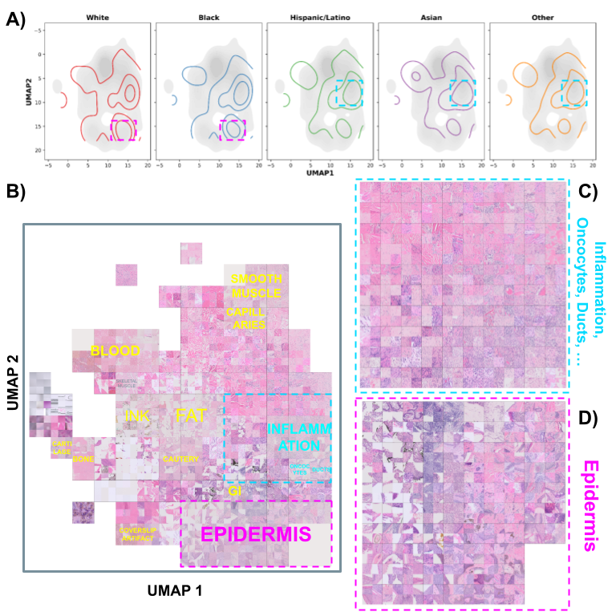
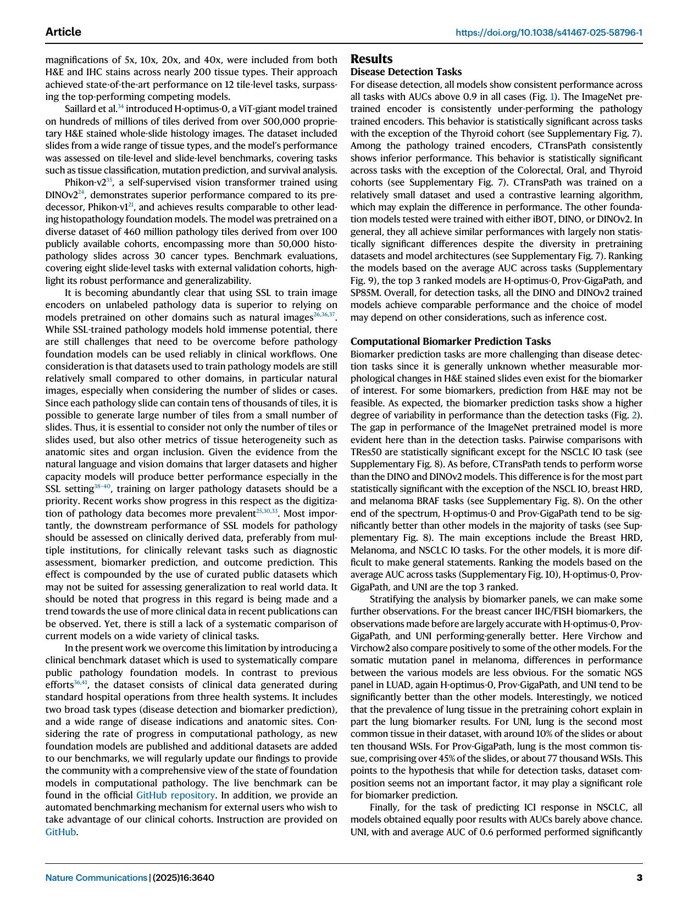
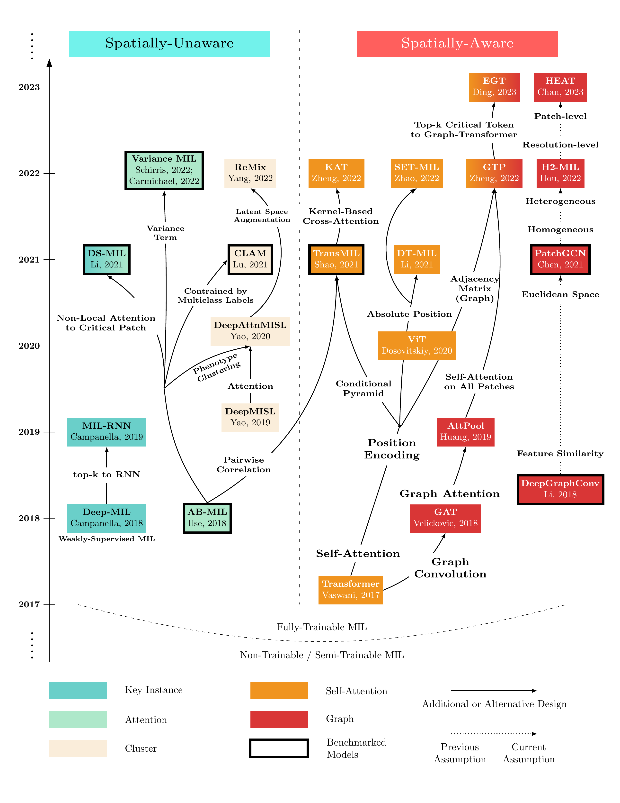

2025
Predicting Patient Self-reported Race From Skin Histological Images with Deep Learning
Shengjia Chen et al. · MICCAI 2025 FAIMI, LNCS
I am a PhD candidate in Biological and Biomedical Sciences, Artificial Intelligence and Emerging Technology (AIET) at the Icahn School of Medicine at Mount Sinai and a member of the Mount Sinai Computational Pathology Lab.
My research develops and evaluates machine-learning methods for medical imaging, with a focus on computational pathology, foundation models, weakly supervised representation learning, and fairness in clinical AI. Across pathology and radiology, I am interested in clinically grounded evaluation: understanding whether models generalize across cohorts, tissue types, clinical endpoints, and demographic groups.
PhD, Biological and Biomedical Sciences
Artificial Intelligence and Emerging Technology (AIET)
2022–2028 (expected)MS, Biomedical Informatics
2020–2022Visiting Student, Applied Physics
2019BS, Applied Physics
2016–2020Assistant Research Scientist, Department of Radiology
2022–2023Software Development Engineer / BM Physicist Intern
2019–2021
Shengjia Chen et al. · MICCAI 2025 FAIMI, LNCS

Gabriele Campanella, Shengjia Chen et al.
Nature Communications

Shengjia Chen et al.
MICCAI 2024 COMPAYL, Proceedings of Machine Learning Research